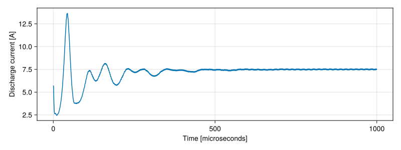
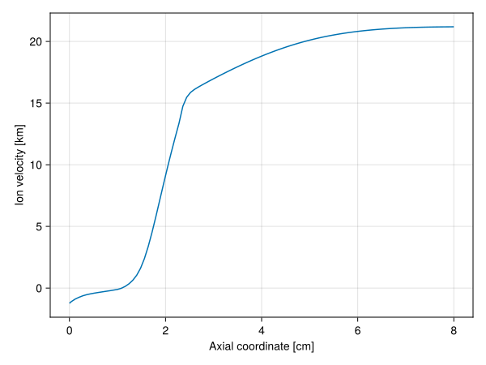

Running a simulation
In this tutorial, we will take you through running a simulation of an SPT-100 Hall thruster in HallThruster. Along the way, you will learn how to
- install the
HallThrusterpackage - configure simulation options
- run a simulation
- examine the results
We assume that you have a basic familiarity with the Julia programming language, and have installed Julia following the instructions on the Julia website. If this does not apply to you, you will want to familiarize yourself with Julia using the Getting started section of the Julia manual. We also assume you know what a Hall thruster is and have some understanding of their operation.
Install
First, open Julia and type ']' to enter the Package REPL (Read-Evaluate-Print Loop) You should see the following prompt (the version may differ depending on your default Julia version).
(@v1.10) pkg>To install HallThruster io your global environment, simply type
(@v1.10) pkg> add HallThrusterThis will download and precompile HallThruster and all of its dependencies. This works, but it is not always desirable to install packages to your global environment. Instead, it is common to have different packages loaded depending on your specific project. To do this, first create a new folder, which we'll call hallthruster_tutorial. Change directories into this folder, open Julia, and enter the package REPL. Type
(@v1.10) pkg> activate .to activate hallthruster_tutorial as its own environment. You should see v1.10 (or whatever version) be replaced with the name of your current folder. From there, you can install packages as normal, i.e.
(hallthruster_tutorial) pkg> add HallThrusterThis will create a file called Project.toml, which tracks the dependencies of the current environment. Environments are great for ensuring reproducability and portability of your Julia code. For example, if you want to send a script to a friend, sending the Project.toml file of your environment means they will be able to automatically download all of the packages you used in your script. Using one environment per project instead of the global environemnt means that your friend doesn't also have to download every single other package you happened to have installed, or manually install all of the packages you use in your script.
Once HallThruster has been installed, we're ready to begin writing and running our simulation code. Create a new file, perhaps called hallthruster_tutorial.jl and open it in your favorite text editor.
Configure
The first thing we need to do is tell your script that we want to use HallThruster. To do this, add the following to the beginning of your script.
using HallThruster: HallThruster as hetThis tells Julia that you want access to the HallThruster module. Since we will be accessing a lot of code in HallThruster, we also tell Julia that we want to refer to HallThruster as a shorter name, in this case het for Hall-effect thruster. You can leave this out, or change het to whatever you want.
We need to tell HallThruster about what kind of simulation we want to run. This is the job of a Config. A Config struct contains most of the geometric, physical, and numerical information that HallThruster.jl needs in order to simulate a Hall thruster. There are a lot of options in a Config, but we will only use a few of them in this tutorial. You can read a full listing of these parameters, their effects, and their defaults on the Configuration page.
Only four parameters are absolutely required in a Config. These are
- the thruster we want to simulate,
- the discharge voltage,
- the neutral mass flow rate at the anode,
- the size of the simulation domain.
We'll begin by constructing a Thruster A Thruster has four components – a name, a geometry, a magnetic field, and an optional flag that says whether the thruster is magnetically-shielded. The geometry is defined using a Geometry1D struct, which requires to specify the length of the discharge channel in combination with the inner and outer channel radii. For the SPT-100, a Geometry1D can be constructed like so:
using HallThruster: HallThruster as het
# All units are SI unless explicitly specified
geom = het.Geometry1D(
channel_length = 0.025,
inner_radius = 0.0345,
outer_radius = 0.05,
)Note that all units are SI unless a unit is explicitly listed in the parameter name. As a result, Geometry1D expects dimensions in meters. If you would like to use explicit units, you can install and load either Unitful or DynamicQuantities, and specify dimensions as follows
using HallThruster: HallThruster as het
using Unitful # or `using DynamicQuantities`, if desired
geom = het.Geometry1D(
channel_length = 2.5u"cm",
inner_radius = 34.5u"mm",
outer_radius = 0.05u"m",
)With the Geometry1D object constructed, we can turn to specifying the radial magnetic field. Unsurprisingly, we use a MagneticField struct for this. MagneticField has three fields — a filename and two arrays. The first array (z) specifies the axial coordinates (in meters) at which the magnetic field is known. The second (B) provides the magnetic field (in Tesla) at those points. While we can definitely manually pass these to MagneticField, in most cases you will want to pass a file instead. You can download a sample magnetic field file here.
Once you have downloaded the magnetic field file and placed it in your current working directory, you can load it using the load_magnetic_field function.
bfield = het.load_magnetic_field("bfield_spt100.csv")If the magnetic field is in some other directory, you can tell load_magnetic_field to look for it using the include_dirs argument. HallThruster will check the provided directories before looking in the present working directory.
bfield = het.load_magnetic_field(
"bfield_spt100.csv";
include_dirs = ["/some/directory", "/another/directory"]
)With our geometry and magnetic field specified, we can finally create a Thruster.
thruster = het.Thruster(
name = "SPT-100",
geometry = geom,
magnetic_field = bfield
)Now, we can set the rest of the options in Config. We'll use a discharge voltage of 300 V, a mass flow rate of 5 milligrams per second, and a domain length of 8 cm. We will also explicitly specify that the propellant is xenon and specify the mass flow rate and a maximum charge state of one. Note that multiple propellants can be provided, so we can run the thruster on propellant mixtures.
config = het.Config(
thruster = thruster,
domain = (0.0, 0.08),
discharge_voltage = 300.0,
propellants = [het.Propellant(het.Xenon, flow_rate_kg_s = 5e-6, max_charge=1)],
)As with Geometry1D, units may be provided here using Unitful or DynamicQuantities, e.g
using Unitful
config = het.Config(
thruster = thruster,
domain = (0.0u"cm", 8.0u"cm"),
discharge_voltage = 300.0u"V",
propellants = [het.Propellant(het.Xenon, flow_rate_kg_s = 5u"mg/s", max_charge=1)],
)Run
Now that we have created a Config struct, we can run our simulation. You might notice that we did not specify a timestep or a grid at any point. To do this, we make use of the SimParams struct.
simparams = het.SimParams(
grid = het.EvenGrid(100), # an evenly-spaced grid with 100 cells
dt = 5e-9, # a base timestep of 5 nanoseconds
duration = 1e-3, # run the simulation for one millisecond of simulated time
num_save = 1000, # save 1000 frames of output
)Here, we specified only four parameters, but SimParams has many more options that can be configured. See the page on Simulations for more details. These four are:
- The
grid, which we have set to anEvenGridwith 100 cells. We can alternatively use anUnevenGrid, which provides more resolution near the discharge channel and less in the plume. More information about these grids can be found on the Grid generation page. - The base timestep
dt, in seconds. HallThruster uses adaptive timestepping by default, so typical timesteps will differ from the value provided here, but the base timestep is used in certain cases when the adaptive timestepping scheme gets stuck, or when uniform timestepping is explicitly requested (by passingadaptive=falseto theSimParamsstruct). We give more detailed explanation ofHallThruster's timestepping strategy on the Timestepping page. - The simulation
duration, in seconds. - The number of frames we wish to save over the simulation runtime. Each frame captures the state of the simulation at a specific time. These are evenly spaced across
duration.
As always, units may be specified.
simparams = het.SimParams(
grid = het.EvenGrid(100), # an evenly-spaced grid with 100 cells
dt = 5u"ns", # a base timestep of 5 nanoseconds
duration = 1u"ms", # run the simulation for one millisecond of simulated time
num_save = 1000, # save 1000 frames of output
)Finally, we can pass these to the run_simulation function, which runs the simulation and returns a Solution object.
solution = het.run_simulation(config, simparams)
# output
[ Info: Simulation exited at t = 0.001 with retcode :success in 1.025520708 seconds.
Hall thruster solution with 1000 saved frames (retcode: success, end time: 0.001 seconds)The first line is printed when a simulation is completed (unless simparams.verbose = false) and tells us the run-time of our simulation. The second line provides a summary of the Hall thruster solution in question, telling us that the simulation has 1000 saved frames, that its end time is 1 ms (0.001 seconds), and, most importantly, that it succeeded (the return code or retcode is :success). If something goes wrong, the simulation will terminate early and the return code will be either failure or error. A return code of :failure means the simulation became unstable and blew up and a NaN or Inf was detected, while a return code of :error means some other error occurred.
Analyze
The Solution object
The Solution object is made up of a few fields. These are
retcode: The return code, described above.t: AVectorof times at which the simulation state is saved. The length of the vector isSimParams.num_saveframes: AVectorofNamedTuples containing plasma properties at each of the times int. The length of the vector isSimParams.num_savegrid: AGridobject containing the cell and edge locations for the simulationconfig: theConfigwe ran the simulation withsimulation: theSimParamswe ran the simulation withpostprocessing: thePostprocessingobject we used, if we used one.error: A string containing any errors that occurred, along with traceback information. This is empty ifretcodeis not:error
We can extract some useful global metrics from a solution, like thrust, dischargecurrent, and anodeefficiency.
thrust = het.thrust(solution)
discharge_current = het.discharge_current(solution)
anode_eff = het.anode_eff(solution)These functions return a vector of thrusts or discharge currents at each of the times in solution.t. There are serveral other functions that act analogously, computing efficiencies or other global metrics. A full listing of these can be found on the Postprocessing page.
Below, we use Makie to plot the discharge current over time for this specific simulation. We can see that the simulation begins with strong transient oscillations before settling down to a relatively stable steady state.
using CairoMakie: Makie as mk
current = het.discharge_current(solution)
f, ax, _ = mk.lines(
solution.t .* 1e6, current,
figure = (;
size = (800, 300)
),
axis = (
xlabel = "Time [microseconds]",
ylabel = "Discharge current [A]",
)
)
Average
If you want a time-averaged global metric, you could average one of these vectors yourself, or you could let HallThruster do it for you. For this purpose, HallThruster provides the time_average function, which averages an entire Solution object.
avg = het.time_average(solution)
# output
Hall thruster solution with 1 saved frame (retcode: success, end time: 0.001 seconds)The result of the time-averaging operation is a new Solution object containing a single frame. All of the normal functions that operate on Solution objects, like discharge_current, still work on a time-averaged Solution. This averaging can be partial—you can specify a frame index or time from which the averaging begins
avg = het.time_average(solution, 300) # average starting at frame 300
avg = het.time_average(solution, 5e-4) # average starting at 5e-4 seconds
avg = het.time_average(solution, 0.5u"ms") # units are supported too, if Unitful or DynamicQuantities loadedYou can also index a Solution with an integer or range to extract a specific frame or range of frames, e.g.
tenth_frame = solution[10] # extract frame number 10 as a new Solution object
middle_800 = solution[101:900] # extract frames 101:900
avg_middle = het.time_average(solution[350:750]) # average frames 350 to 750Postprocessing functions like discharge_current and thrust work normally on the results of these operations as well.
Extract plasma properties
Lastly, we can obtain plasma properties by indexing a Solution object with a Symbol. For instance, if we want to extract the time-averaged ion velocity of singly-charged ions, we could do
avg = het.time_average(solution, 0.5u"ms")
ui_1 = avg.frames[].ions[:Xe][1].uHere, we use :Xe to specify which ion type we want and 1 indicates that we want singly-charged ions. Electron properties can be obtained directly from the frame, as shown below.
Te = avg.frames[].Tev # electron temp in eV
E = avg.frames[].E # electric field in V/mWe can plot the extracted properties using a plotting package like Makie.
using CairoMakie: Makie as mk
avg = het.time_average(solution, 0.5u"ms")
# extract the cell centers in meters, and multiply to convert to cm
z_cm = avg.grid.cell_centers .* 100
# extract the ion velocity and convert to km/s
ui_km_s = avg.frames[].ions[:Xe][1].u ./ 1000
f, ax, ln = mk.lines(
z_cm, ui_km_s,
axis = (
xlabel = "Axial coordinate [cm]",
ylabel = "Ion velocity [km]")
)
display(f)
Many other parameters can be extracted this way, including neutral and electron properties. See Outputs for a full list.
Conclusion
Now you known how to run a basic simulation in HallThruster. You can specify a thruster and geometry, input operating conditions, select numerical properties, run the simulation, and extract useful data. In this tutorial, we left many of the options at their defaults, but HallThruster is highly configurable. You can change anomalous transport models, propellants, wall loss models, and more. If none of the built-ins are sufficient, you can even write your own models and create your own propellants. You can also run the code from python, or directly from a JSON input file. The rest of the documentation contains details about all of this and more.
If you encounter an issue running the code, please file a GitHub issue. HallThruster is an evolving code, and new features are implemented on a regular basis. Requests for features and documentation improvement are also welcome, though we cannot guarantee that any specific features will be implemented.
Happy simulating!